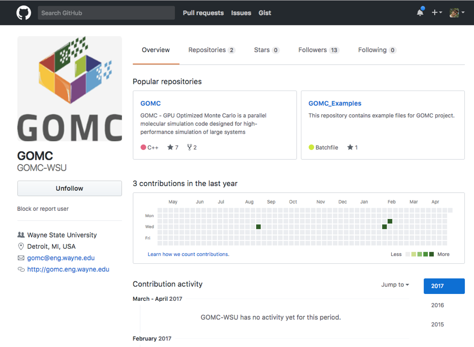
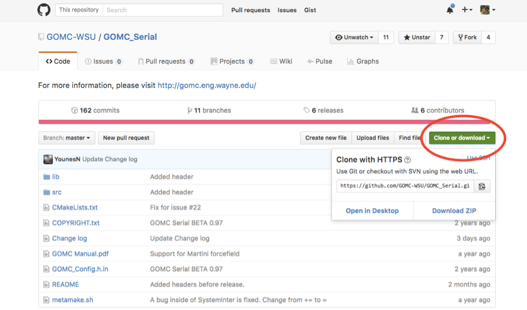
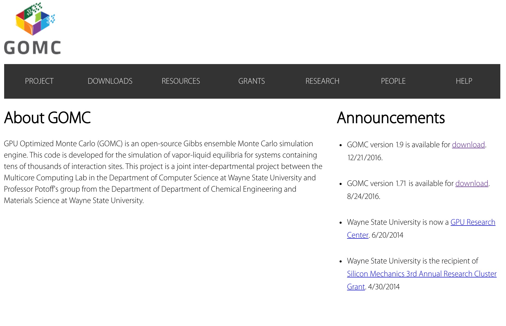
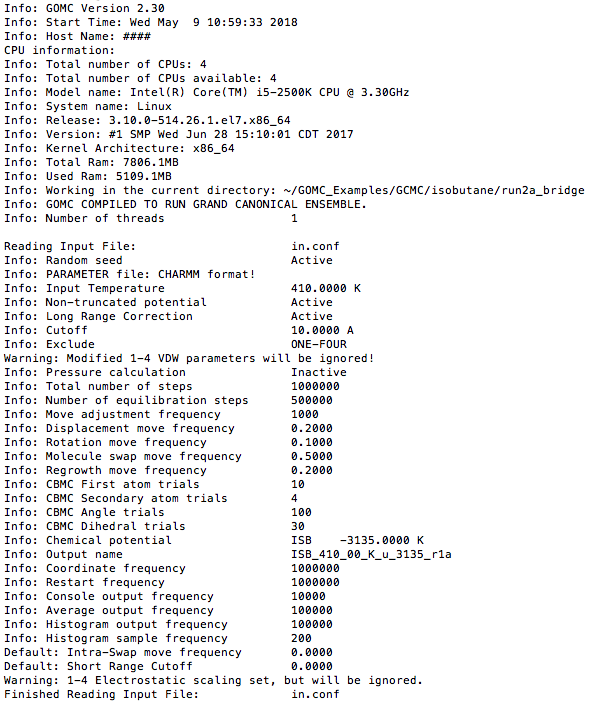
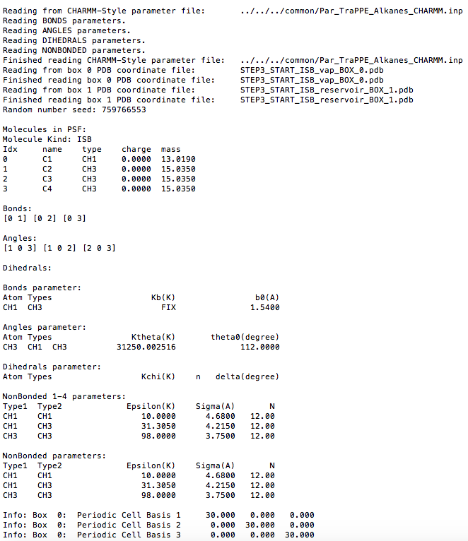
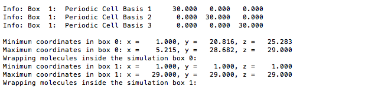
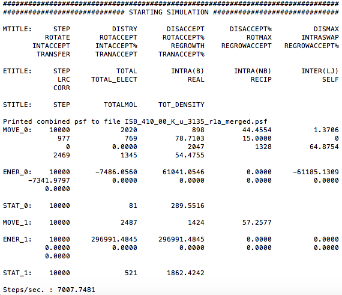
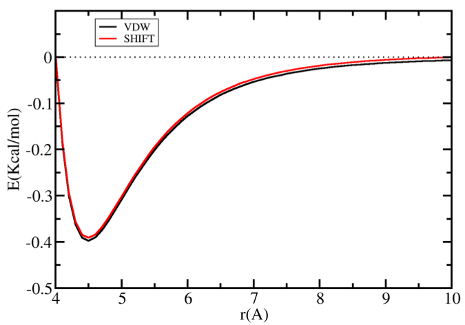
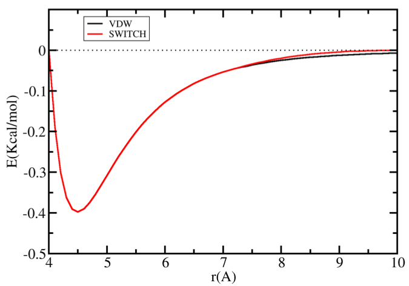
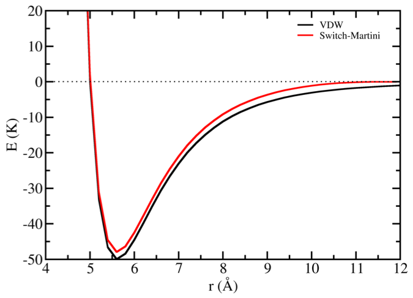

Welcome to GOMC’s documentation!¶
Overview¶
This document will instruct a new user how to download, compile, prepare the input files, and run the GOMC molecular simulation code. A basic understanding of statistical physics is recommended to complete this tutorial.
To demonstrate the capabilities of the code, the user is guided through the process of downloading, compiling a GOMC executable, and preparing input files such as PDB, PSF, Parameter, and Configuration file. Executable is then used to calculate the saturated vapor and liquid equilibria (VLE) using Gibbs Ensemble Monte Carlo on systems of pure isobutane (R600a), a branched alkane that whose application as a refrigerant/propellant is increasing. The Transferable Potentials for Phase Equilibria (TraPPE) united atom (UA) force field is used to describe the molecular geometry constraints and the intermolecular interactions.
Introduction¶
GPU Optimized Monte Carlo (GOMC) is open-source software for simulating many-body molecular systems using the Metropolis Monte Carlo algorithm. GOMC is written in object oriented C++, which was chosen since it offers a good balance between code development time, interoperability with existing software elements, and code performance. The software may be compiled as a single-threaded application, a multi-threaded application using OpenMP, or to use many-core heterogeneous CPU-GPU architectures using OpenMP and CUDA. GOMC officially supports Windows 7 or newer and most modern distribution of GNU/Linux. This software has the ability to compile on recent versions of macOS; however, such a platform is not officially supported.
GOMC employs widely-used simulation file types (PDB, PSF, CHARMM-style parameter file) and supports polar and non-polar linear and branched molecules. GOMC can be used to study vapor-liquid and liquid-liquid equilibria, adsorption in porous materials, surfactant self-assembly, and condensed phase structure for complex molecules.
To cite GOMC software, please refer to GOMC paper.
GOMC supported ensembles:¶
- Canonical (NVT)
- Isobaric-isothermal (NPT)
- Grand canonical (μVT)
- Constant volume Gibbs (NVT-Gibbs)
- Constant pressure Gibbs (NPT-Gibbs)
GOMC supported Monte Carlo moves:¶
- Rigid-body displacement
- Rigid-body rotation
- Regrowth using coupled-decoupled configurational-bias
- Crankshaft using combination of crankshaft and coupled-decoupled configurational-bias
- Intra-box swap using coupled-decoupled configurational-bias
- Intra-box molecular exchange Monte Carlo
- Inter-box swap using coupled-decoupled configurational-bias
- Inter-box molecular exchange monter carlo
- Volume exchange (both isotropic and anisotropic)
GOMC supported force fields:¶
- OPLS
- CHARMM
- TraPPE
- Mie
- Martini
GOMC supported molecules:¶
- Polar molecules (using Ewald summation)
- Non-polar molecules (standard LJ and Mie potential)
- Linear molecules (using coupled-decoupled configurational-bias)
- Branched molecules (using coupled-decoupled configurational-bias)
- Cyclic molecules (using combination of coupled-decoupled configurational-bias and crankshaft to sample intramolecular degrees of freedom of cyclic molecules)
Note
- It is important to start the simulation with correct molecular geometry such as correct bond length, angles, and dihedral.
- In GOMC if the defined bond length in
Parameterfile is different from calculated bond length inPDBfiles by more than 0.02 \(Å\), you will receive a warning message with detailed information (box, residue id, specified bond length, and calculated bond length)
Important
- Molecular geometry of
LinearandBranchedmolecules will be corrected during the simulation by using the Monte Carlo moves that uses coupled-decoupled configurational-bias method, such asRegrowth,Intra-box swap, andInter-box swap.
Warning
- Bond length of the
Cyclicmolecules that belong to the body of rings will never be changed. Incorrect bond length may result in incorrect simulation results. - To sample the angles and dihedrals of a
Cyclicmolecule that belongs to the body of the ring,RegrowthorCrankshaftMonte Carlo move must be used. - Any atom or group attached to the body of the ring, will uses coupled-decoupled configurational-bias to sample the molecular geometry.
- Flexible
Cyclicmolecules with multiple rings (3 or more) that share edges (e.g. tricyclic), are not supported in GOMC. This is due the fact that noCrankshaftmove can alter the angle or dihedral of this atom, without changing the bond length.
Software Requirements¶
C++11 Compliant Compiler¶
Linux/macOS
icpc (Intel C++ Compiler)
In Linux, the Intel compiler will generally produce the fastest CPU executables (when running on Intel Core processors). Type the following command in a terminal:
$ icpc --version
If gives a version number 16.0.3 (2016 Initial version) or later, you’re all set. Otherwise, we recommend upgrading.
g++
Type the following command in a terminal:
$ g++ --version
If gives a version number 4.4 or later, you’re all set. Otherwise, we recommend upgrading.
Windows
Visual Studio Microsoft’s Visual Studio 2010 or later is recommended.
To check the version:
Help (top tab) -> About Microsoft Visual Studio

CMake¶
To check if cmake is installed:
$ which cmake
To check the version number:
$ cmake --version
The minimum required version is 2.8. However, we recommend to use version 3.2 or later.
CUDA Toolkit¶
CUDA is required to compile the GPU executable in both Windows and Linux. However, is not required to compile the CPU code. To download and install CUDA visit NVIDIA’s webpage:
https://developer.nvidia.com/cuda-downloads
https://developer.nvidia.com/cuda
Please refer to CUDA Developer webpages to select an appropriate version for the desired platform. To install CUDA in Linux root/sudo, privileges are generally required. In Windows, administrative access is required.
To check if nvcc is installed:
$ which nvcc
To check the version number:
$ nvcc --version
The GPU builds of the code requires NVIDIA’s CUDA 8.0 or newer.
Recommended Software Tools¶
The listed programs are used in this manual and are generally considered necessary.
Packmol¶
Packmol is a free molecule packing tool (written in Fortran), created by José Mario Martínez, a professor of mathematics at the State University of Campinas, Brazil. Packmol allows a specified number of molecules to be packed at defined separating distances within a certain region of space. More information regarding downloading and installing Packmol is available on their homepage:
http://www.ime.unicamp.br/~martinez/packmol
Warning
One of Packmol’s limitations is that it is unaware of topology; it treats each molecule or group of molecules as a rigid set of points. It is highly suggested to used the optimized structure of the molecule as the input file to packmol.
Warning
Another more serious limitation is that it is not aware of periodic boundary conditions (PBC). As a result, when using Packmol to pack PDBs for GOMC, it is recommended to pack to a box 1 Angstroms smaller than the simulation box size. This prevents hard overlaps over the periodic boundary.
VMD¶
VMD (Visual Molecular Dynamics) is a 3-D visualization and manipulation engine for molecular systems written in C-language. VMD is distributed and maintained by the University of Illinois at Urbana-Champaign. Its sources and binaries are free to download. It comes with a robust scripting engine, which is capable of running python and tcl scripts. More info can be found here:
http://www.ks.uiuc.edu/Research/vmd/
Although GOMC uses the same fundamental file types, PDB (coordinates) and PSF (topology) as VMD, it uses some special tricks to obey certain rules of those file formats. One useful purpose of VMD is visualization and analyze your systems.
A system of united atom isobutane molecules
Nonetheless, the most critical part of VMD is a tool called PSFGen. PSFGen uses a tcl or python script to generate a PDB and PSF file for a system of one or more molecules. It is, perhaps, the most convenient way to generate a compliant PSF file.
An overview of the PSFGen file generation process and its relationship to VMD/NAMD
Tip
To read more about PSFGen, reference:
Generating a Protein Structure File (PSF), part of the NAMD Tutorial from UIUC
How to get the software¶
The CPU and GPU code are merged together under GOMC project. Currently, version control is handled through the GitHub repository. The latest GOMC release, Example files, and User Manual can be downloaded from GOMC website or GitHub repository.
GitHub¶
The posted builds in Master branch are “frozen” versions of the code that have been validated for a number of systems and ensembles. Other branches are created as a means of implementing new features. The latest updated code builds, manual, example files, and other resources can be obtained via the following GitHub repository:
GOMC and Examples repository can be found under the main page. Under GOMC repository, the code and manual can be found. Each repository can be downloaded by clicking on the Clone or download tab.
To clone the GOMC using git, execute the following command in your terminal:
$ git clone https://github.com/GOMC-WSU/GOMC.git
To clone the GOMC Example files using git, execute the following command in your terminal:
$ git clone https://github.com/GOMC-WSU/GOMC_Examples.git
Website¶
To access the GOMC website, please click on the following link: GOMC Website
The code can be found under the download tab, below and to the right of the logo. When new betas (or release builds) are announced, they will replace the prior code under the downloads tab. An announcement will be posted on the front page to notify users.
GOMC is distributed as a compressed folder, containing the source and build system. To compile the code after downloading it, the first step is to extract the compressed build folder.
In Linux, the GPU and CPU codes are compressed using gzip and tar (*.tar.gz). To extract, simply move to the desire folder and type in the command line:
$ tar -xzvf <file name>.tar.gz
Compiling GOMC¶
GOMC generates four executable files for CPU code; GOMC_CPU_GEMC (Gibbs ensemble), GOMC_CPU_NVT (NVT ensemble), GOMC_CPU_NPT (isobaric-isothermal ensemble), and GOMC_CPU_GCMC (Grand canonical ensemble). In case of installing CUDA Toolkit, GOMC will generate additional four executable files for GPU code; GOMC_GPU_GEMC, GOMC_GPU_NVT, GOMC_GPU NPT, and GOMC_GPU_GCMC.
This section guid users to compile GOMC in Linux or Windows.
Linux¶
First, navigate your command line to the GOMC base directory. To compile GOMC on Linux, give permission to “metamake.sh” by running the following command and execute it:
$ chmod u+x metamake.sh
$ ./metamake.sh
This script will create a bin directory and run cmake file to compile the code as well. All executable files will be generated in the “bin” directory.
Windows¶
To compile GOMC on in Windows, follow these steps:
- Open the Windows-compatible CMake GUI.
- Set the Source Folder to the GOMC root folder.
- Set the build Folder to your Build Folder.
- Click configure, select your compiler/environment
- Wait for CMake to finish the configuration.
- Click configure again and click generate.
- Open the CMake-generated project/solution etc. to the desired IDE (e.g Visual Studio).
- Using the solution in the IDE of choice build GOMC per the IDE’s standard release compilation/exe- cutable generation methods.
Note
You can also use CMake from the Windows command line if its directory is added to the PATH environment variable.
Configuring CMake¶
GOMC uses CMAKE to generate multi-platform intermediate files to compile the project. In this section, you can find all the information needed to configure CMake. We recommend using a different directory for the CMake output than the home directory of the project as CMake tend to generate lots of files. CMake has a ridiculously expansive set of options, so this document will only reproduce the most obviously relevant ones. When possible, options should be passed into CMake via command line options rather than the CMakeCached.txt file:
- CMAKE_BUILD_TYPE
To get the best performance you should build the project in release mode. In CMake GUI you can set the value of “CMAKE_BUILD_TYPE” to “Release” and in CMake command line you can add the following to the CMake:
-DCMAKE_BUILD_TYPE=ReleaseTo compile the GOMC in debug mode, in CMake GUI, change the value of “CMAKE_BUILD_TYPE” to “Debug” and in CMake command line you can add the following to the CMake:
-DCMAKE_BUILD_TYPE=DebugOther options are “<None | ReleaseWithDebInfo | MinSizeRel>”.
- CMAKE_CXX_COMPILER
- This option will set the compiler. It is recommended to use the Intel Compiler and linking tools, if possible (icc/icpc/etc.). They significantly outperform the default GNU and Visual Studio compiler tools and are available for free for academic use with registration.
- CMAKE_CXX_FLAGS_RELEASE:STRING
To run the parallel version of CPU code, it needs to be compiled with openmp library. Open the file “CMakeCache.txt”, while still in the “bin” folder, and change the value from “-O3 -DNDEBUG” to “-O3 -qopenmp -DNDEBUG”. Recompile the GOMC by typing the command:
$ make
- ENSEMBLE_NVT
- You can turn the compilation of CPU version of NVT ensemble on or off using this option. -DENSEMBLE_NVT=<On | Off>
- ENSEMBLE_NPT
- You can turn the compilation of CPU version of NPT ensemble on or off using this option. -DENSEMBLE_NPT=<On | Off>
- ENSEMBLE_GCMC
- You can turn the compilation of CPU version of GCMC ensemble on or off using this option. -DENSEMBLE_GCMC=<On | Off>
- ENSEMBLE_GEMC
- You can turn the compilation of CPU version of GEMC ensemble on or off using this option. -DENSEMBLE_GEMC=<On | Off>
- ENSEMBLE_GPU_NVT
- You can turn the compilation of GPU version of NVT ensemble on or off using this option. -DENSEMBLE_NVT=<On | Off>
- ENSEMBLE_GPU_NPT
- You can turn the compilation of GPU version of NPT ensemble on or off using this option. -DENSEMBLE_NPT=<On | Off>
- ENSEMBLE_GPU_GCMC
- You can turn the compilation of GPU version of GCMC ensemble on or off using this option. -DENSEMBLE_GCMC=<On | Off>
- ENSEMBLE_GPU_GEMC
- You can turn the compilation of GPU version of GEMC ensemble on or off using this option. -DENSEMBLE_GEMC=<On | Off>
Input File Formats¶
In order to run simulation in GOMC, the following files need to be provided:
- GOMC executable
- PDB file(s)
- PSF file(s)
- Parameter file
- Input file “NAME.conf” (proprietary control file)
PDB File¶
GOMC requires only one PDB file for NVT and NPT ensembles. However, GOMC requires two PDB files for GEMC and GCMC ensembles.
What is PDB file¶
The term PDB can refer to the Protein Data Bank (http://www.rcsb.org/pdb/), to a data file provided there, or to any file following the PDB format. Files in the PDB include various information such as the name of the compound, the ATOM and HETATM records containing the coordinates of the molecules, and etc. PDB widely used by NAMD, GROMACS, CHARMM, ACEMD, and Amber. GOMC ignore everything in a PDB file except for the REMARK, CRYST1, ATOM, and END records. An overview of the PDB standard can be found here:
http://www.wwpdb.org/documentation/file-format-content/format33/sect2.html#HEADER http://www.wwpdb.org/documentation/file-format-content/format33/sect8.html#CRYST1 http://www.wwpdb.org/documentation/file-format-content/format33/sect9.html#ATOM
PDB contains foure major parts; REMARK, CRYST1, ATOM, and END. Here is the definition of each field and how GOMC is using them to get the information it requires.
REMARK: This header records present experimental details, annotations, comments, and information not included in other records (for more information, click here).However, GOMC uses this header to print simulation informations.
- Max Displacement (Å)
- Max Rotation (Degree)
- Max volume exchange (\(Å^3\))
- Monte Carlo Steps (MC)
CRYST1: This header records the unit cell dimension parameters.- Lattice constant: a,b,c (Å)
- Lattice angles: \(\alpha, \beta, \gamma\) (Degree)
ATOM: The ATOM records present the atomic coordinates for standard amino acids and nucleotides. They also present the occupancy and temperature factor for each atom.- ATOM: Record name
- serial: Atom serial number.
- name: Atom name.
- resName: Residue name.
- chainID: Chain identifier.
- resSeq: Residue sequence number.
- x: Coordinates for X (Å).
- y: Coordinates for Y (Å).
- z: Coordinates for Z (Å).
- occupancy: GOMC uses to define which atoms belong to which box.
- beta: Beta or Temperature factor. GOMC uses this value to define the mobility of the atoms. element: Element symbol.
END: A frame in the PDB file is terminated with the keyword.
Here are the PDB output of GOMC for the first molecule of isobutane:
REMARK GOMC 122.790 3.14159 3439.817 1000000
CRYST1 35.245 35.245 35.245 90.00 90.00 90.00
ATOM 1 C1 ISB 1 0.911 -0.313 0.000 0.00 0.00 C
ATOM 2 C1 ISB 1 1.424 -1.765 0.000 0.00 0.00 C
ATOM 3 C1 ISB 1 -0.629 -0.313 0.000 0.00 0.00 C
ATOM 4 C1 ISB 1 1.424 0.413 -1.257 0.00 0.00 C
END
The fields seen here in order from left to right are the record type, atom ID, atom name, residue name, residue ID, x, y, and z coordinates, occupancy, temperature factor (called beta), and segment name.
The atom name is “C1” and residue name is “ISB”. The PSF file (next section) contains a lookup table of atoms. These contain the atom name from the PDB and the name of the atom kind in the parameter file it corresponds to. As multiple different atom names will all correspond to the same parameter, these can be viewed “atom aliases” of sorts. The chain letter (in this case ‘A’) is sometimes used when packing a number of PDBs into a single PDB file.
Important
- VMD requires a constant number of ATOMs in a multi-frame PDB (multiple records terminated by “END” in a single file). To compensate for this, all atoms from all boxes in the system are written to the output PDBs of this code.
- For atoms not currently in a box, the coordinates are set to
< 0.00, 0.00, 0.00 >. The occupancy is commonly just set to “1.00” and is left unused by many codes. We recycle this legacy parameter by using it to denote, in our output PDBs, the box a molecule is in (box 0 occupancy=0.00 ; box 1 occupancy=1.00) - The beta value in GOMC code is used to define the mobility of the molecule.
Beta = 0.00: molecule can move and transfer within and between boxes.Beta = 1.00: molecule is fixed in its position.Beta = 2.00: molecule can move within the box but cannot be transferred between boxes.
Generating PDB file¶
With that overview of the format in mind, the following steps describe how a PDB file is typically built.
- A single molecule PDB is obtained. In this example, the QM software package Gaussian was used to draw the molecule, which was then edited by hand to adhere to the PDB spec properly. The end result is a PDB for a single molecule:
REMARK 1 File created by GaussView 5.0.8 ATOM 1 C1 ISB 1 0.911 -0.313 0.000 C ATOM 2 C1 ISB 1 1.424 -1.765 0.000 C ATOM 3 C1 ISB 1 -0.629 -0.313 0.000 C ATOM 4 C1 ISB 1 1.424 0.413 -1.257 C END
- Next, packings are calculated to place the simulation in a region of vapor-liquid coexistence. There are a couple of ways to do this in Gibbs ensemble:
- Pack both boxes to a single middle density, which is an average of the liquid and vapor densities.
- Same as previous method, but add a modest amount to axis of one box (e.g. 10-30 A). This technique can be handy in the constant pressure Gibbs ensemble.
- Pack one box to the predicted liquid density and the other to the vapor density.
A good reference for getting the information needed to estimate packing is the NIST Web Book database of pure compounds:
- After packing is determined, a basic pack can be performed with a Packmol script. Here is the example of packing 1000 isobutane in 70 A cubic box:
tolerance 3.0 filetype pdb output STEP2_ISB_packed_BOX 0.pdb structure isobutane.pdb number 1000 inside cube 0.1 0.1 0.1 70.20 end structureCopy the above text into “pack_isobutane.inp” file, save it and run the script by typing the following line into the terminal:
$ ./packmol < pack_isobutane.inp
PSF File¶
GOMC requires only one PSF file for NVT and NPT ensembles. However, GOMC requires two PSF files for GEMC and GCMC ensembles.
What is PSF file¶
Protein structure file (PSF), contains all of the molecule-specific information needed to apply a particular force field to a molecular system. The CHARMM force field is divided into a topology file, which is needed to generate the PSF file, and a parameter file, which supplies specific numerical values for the generic CHARMM potential function. The topology file defines the atom types used in the force field; the atom names, types, bonds, and partial charges of each residue type; and any patches necessary to link or otherwise mutate these basic residues. The parameter file provides a mapping between bonded and nonbonded interactions involving the various combinations of atom types found in the topology file and specific spring constants and similar parameters for all of the bond, angle, dihedral, improper, and van der Waals terms in the CHARMM potential function. PSF file widely used by by NAMD, CHARMM, and X-PLOR.
The PSF file contains six main sections: remarks, atoms, bonds, angles, dihedrals, and impropers (dihedral force terms used to maintain planarity). Each section starts with a specific header described bellow:
NTITLE: remarks on the file. The following is taken from a PSF file for isobutane:PSF 3 !NTITLE REMARKS original generated structure x-plor psf file REMARKS topology ./Top_Branched_Alkanes.inp REMARKS segment ISB { first NONE; last NONE; auto angles dihedrals }NATOM: Defines the atom names, types, and partial charges of each residue type.atom ID segment name residue ID residue name atom name atom type atom charge atom mass
The following is taken from a PSF file for isobutane:
4000 !NATOM 1 ISB 1 ISB C1 CH1 0.000000 13.0190 0 2 ISB 1 ISB C2 CH3 0.000000 15.0350 0 3 ISB 1 ISB C3 CH3 0.000000 15.0350 0 4 ISB 1 ISB C4 CH3 0.000000 15.0350 0 5 ISB 2 ISB C1 CH1 0.000000 13.0190 0 6 ISB 2 ISB C2 CH3 0.000000 15.0350 0 7 ISB 2 ISB C3 CH3 0.000000 15.0350 0 8 ISB 2 ISB C4 CH3 0.000000 15.0350 0
The fields in the atom section, from left to right are atom ID, segment name, residue ID, residue name, atom name, atom type, charge, mass, and an unused 0.
NBOND: The covalent bond section lists four pairs of atoms per line. The following is taken from a PSF file for isobutane:3000 !BOND: bonds 1 2 1 3 1 4 5 6 5 7 5 8
NTHETA: The angle section lists three triples of atoms per line. The following is taken from a PSF file for isobutane:3000 !NTHETA: angles 2 1 4 2 1 3 3 1 4 6 5 8 6 5 7 7 5 8
NPHI: The dihedral sections list two quadruples of atoms per line.NIMPHI: The improper sections list two quadruples of atoms per line. GOMC currently does not support improper. For the molecules without dihedral or improper, PDF file look like the following:0 !NPHI: dihedrals 0 !NIMPHI: impropers
(other sections such as cross terms)
Important
- The PSF file format is a highly redundant file format. It repeats identical topology of thousands of molecules of a common kind in some cases. GOMC follows the same approach as NAMD, allowing this excess information externally and compiling it in the code.
- Other sections (e.g. cross terms) contain unsupported or legacy parameters and are ignored.
- Following the restrictions of VMD, the order of the PSF atoms must match the order in the.
- Improper entries are read and stored, but are not currently used. Support will eventually be added for this.
Generating PSF file¶
The PSF file is typically generated using PSFGen. It is convenient to make a script, such as the example below, to do this:
package require psfgen
topology ./Top_branched_Alaknes.inp
segment ISB {
pdb ./STEP2_ISB_packed_BOX 0.pdb
first none
last none
}
coordpdb ./STEP2_ISB_packed_BOX 0.pdb ISB
writepsf ./STEP3_START_ISB_sys_BOX_0.psf
writepdb ./STEP3_START_ISB_sys_BOX_0.pdb
Typically, one script is run per box to generate a finalized PDB/PSF for that box. The script requires one additional file, the NAMD-style topology file. While GOMC does not directly read or interact with this file, it’s typically used to generate the PSF and, hence, is considered one of the integral file types. It will be briefly discussed in the following section.
Topology File¶
A CHARMM forcefield topology file contains all of the information needed to convert a list of residue names into a complete PSF structure file. The topology is a whitespace separated file format, which contains a list of atoms and their corresponding masses, and a list of residue information (charges, composition, and topology). Essentially, it is a non-redundant lookup table equivalent to the PSF file.
This is followed by a series of residues, which tell PSFGen what atoms are bonded to a given atom. Each residue is comprised of four key elements:
- A header beginning with the keyword RESI with the residue name and net charge
- A body with multiple ATOM entries (not to be confused with the PDB-style entries of the same name), which list the partial charge on the particle and what kind of atom each named atom in a specific molecule/residue is.
- A section of lines starting with the word BOND contains pairs of bonded atoms (typically 3 per line)
- A closing section with instructions for PSFGen.
Here’s an example of topology file for isobutane:
* Custom top file -- branched alkanes *
11
!
MASS 1 CH3 15.035 C !
MASS 2 CH1 13.019 C !
AUTOGENERATE ANGLES DIHEDRALS
RESI ISB 0.00 ! isobutane - TraPPE
GROUP
ATOM C1 CH1 0.00 ! C3\
ATOM C2 CH3 0.00 ! C1-C2
ATOM C3 CH3 0.00 ! C4/
ATOM C4 CH3 0.00 !
BOND C1 C2 C1 C3 C1 C4
PATCHING FIRS NONE LAST NONE
END
Note
The keyword END must be used to terminate this file and keywords related to the auto-generation process must be placed near the top of the file, after the MASS definitions.
Tip
More in-depth information can be found in the following links:
Parameter File(s)¶
Currently, GOMC uses a single parameter file and the user has the two kinds of parameter file choices:
CHARMM(Chemistry at Harvard Molecular Mechanics) compatible parameter fileEXOTICorMieparameter file
If the parameter file type is not specified or if the chosen file is missing, an error will result.
Both force field file options are whitespace separated files with sections preceded by a tag. When a known tag (representing a molecular interaction in the model) is encountered, reading of that section of the force field begins. Comments (anything after a * or !) and whitespace are ignored. Reading concludes when the end of the file is reached or another section tag is encountered.
CHARMM format parameter file¶
CHARMM contains a widely used model for describing energies in Monte Carlo and molecular dynamics simulations. It is intended to be compatible with other codes that use such a format, such as NAMD. See here for a general overview of the CHARMM force field.
Here’s the basic CHARMM contributions that are supported in GOMC:
As seen above, the following are recognized, read and used:
BONDS- Quadratic expression describing bond stretching based on bond length (b) in Angstrom – Typically, it is ignored as bonds are rigid for Monte Carlo simulations.Note
GOMC does not sample bond stretch. To ignore the relative bond energy, set the \(K_b\) to a large value i.e. “999999999999”.

Oscillations about the equilibrium bond length
ANGLES- Describe the conformational lbehavior of an angle (\(\delta\)) between three atoms, one of which is shared branch point to the other two.Note
To fix any angle and ignore the related angle energy, set the \(K_\theta\) to a large value i.e. “999999999999”.

Oscillations of 3 atoms about an equilibrium bond angle
DIHEDRALS- Describes crankshaft-like rotation behavior about a central bond in a series of three consecutive bonds (rotation is given as \(\phi\)).
Torsional rotation of 4 atoms about a central bond
NONBONDED- This tag name only should be used if CHARMM force files are being used. This section describes 12-6 (Lennard-Jones) non-bonded interactions. Non-bonded parameters are assigned by specifying atom type name followed by polarizabilities (which will be ignored), minimum energy, and (minimum radius)/2. In order to modify 1-4 interaction, a second polarizability (again, will be ignored), minimum energy, and (minimum radius)/2 need to be defined; otherwise, the same parameter will be considered for 1-4 interaction.
Non-bonded energy terms (electrostatics and Lennard-Jones)
NBFIX- This tag name only should be used if CHARMM force field is being used. This section allows in- teraction between two pairs of atoms to be modified, done by specifying two atom type names followed by minimum energy and minimum radius. In order to modify 1-4 interaction, a second minimum energy and minimum radius need to be defined; otherwise, the same parameter will be considered for 1-4 interaction.Note
Please pay attention that in this section we define minimum radius, not (minimum radius)/2 as it is defined in the NONBONDED section.
Currently, supported sections of the
CHARMMcompliant file includeBONDS,ANGLES,DIHEDRALS,NONBONDED,NBFIX. Other sections such asCMAPare not currently read or supported.
BONDS¶
(“bond stretching”) is one key section of the CHARMM-compliant file. Units for the \(K_b\) variable in this section are in kcal/mol; the \(b_0\) section (which represents the equilibrium bond length for that kind of pair) is measured in Angstroms.
BONDS
!V(bond) = Kb(b - b0)**2
!
!Kb: kcal/mole/A**2
!b0: A
!
!Kb (kcal/mol) = Kb (K) * Boltz. const.;
!
!atom type Kb b0 description
CH3 CH1 9999999999 1.540 ! TraPPE 2
Note
The \(K_b\) value may appear odd, but this is because a larger value corresponds to a more rigid bond. As Monte Carlo force fields (e.g. TraPPE) typically treat molecules as rigid constructs, \(K_b\) is set to a large value - 9999999999. Sampling bond stretch is not supported in GOMC.
ANGLES¶
(“bond bending”), where \(\theta\) and \(\theta_0\) are commonly measured in degrees and \(K_\theta\) is measured in kcal/mol/K. These values, in literature, are often expressed in Kelvin (K). To convert Kelvin to kcal/mol/K, multiply by the Boltzmann constant – \(K_\theta\), 0.0019872041 kcal/mol. In order to fix the angle, it requires to set a large value for \(K_\theta\). By assigning a large value like 9999999999, specified angle will be fixed and energy of that angle will considered to be zero.
Here is an example of what is necessary for isobutane:
ANGLES
!
!V(angle) = Ktheta(Theta - Theta0)**2
!
!V(Urey-Bradley) = Kub(S - S0)**2
!
!Ktheta: kcal/mole/rad**2
!Theta0: degrees
!S0: A
!
!Ktheta (kcal/mol) = Ktheta (K) * Boltz. const.
!
!atom types Ktheta Theta0
CH3 CH1 CH3 62.100125 112.00 ! TraPPE 2
Some CHARMM ANGLES section entries include Urey-Bradley potentials (\(K_{ub}\), \(b_{ub}\)), in addition to the standard quadratic angle potential. The constants related to this potential function are currently read, but the logic has not been added to calculate this potential function. Support for this potential function will be added in later versions of the code.
DIHEDRALS¶
The final major bonded interactions section of the CHARMM compliant parameter file are the DIHEDRALS. Each dihedral is composed of a dihedral series of 1 or more terms. Often, there are 4 to 6 terms in a dihedral. Angles for the dihedrals’ deltas are given in degrees.
Since isobutane has no dihedral, here are the parameters pertaining to 2,3-dimethylbutane:
DIHEDRALS
!
!V(dihedral) = Kchi(1 + cos(n(chi) - delta))
!
!Kchi: kcal/mole
!n: multiplicity
!delta: degrees
!
!Kchi (kcal/mol) = Kchi (K) * Boltz. const.
!
!atom types Kchi n delta description
X CH1 CH1 X -0.498907 0 0.0 ! TraPPE 2
X CH1 CH1 X 0.851974 1 0.0 ! TraPPE 2
X CH1 CH1 X -0.222269 2 180.0 ! TraPPE 2
X CH1 CH1 X 0.876894 3 0.0 ! TraPPE 2
Note
The code allows the use of ‘X’ to indicate ambiguous positions on the ends. This is useful because this kind is often determined solely by the two middle atoms in the middle of the dihedral, according to literature.
IMPROPERS¶
Energy parameters used to describe out-of-plane rocking are currently read, but unused. The section is often blank. If it becomes necessary, algorithms to calculate the improper energy will need to be added.
NONBONDED¶
The next section of the CHARMM style parameter file is the NONBONDED. In order to use TraPPE this section of the CHARMM compliant file is critical. Here’s an example with our isobutane potential model:
NONBONDED
!
!V(Lennard-Jones) = Eps,i,j[(Rmin,i,j/ri,j)**12 - 2(Rmin,i,j/ri,j)**6]
!
!atom ignored epsilon Rmin/2 ignored eps,1-4 Rmin/2,1-4
CH3 0.0 -0.194745992 2.10461634058 0.0 0.0 0.0 ! TraPPE 1
CH1 0.0 -0.019872040 2.62656119304 0.0 0.0 0.0 ! TraPPE 2
End
Note
The \(R_{min}\) is the potential well-depth, where the attraction is maximum. However, \(\sigma\) is the particle diameter, where the interaction energy is zero. To convert \(\sigma\) to \(R_{min}\), simply multiply \(\sigma\) by 0.56123102415.
Important
If no parameter was defined for 1-4 interaction e.g (\(\epsilon_{1-4}, Rmin_{1-4}/2\)), GOMC will use the \(\epsilon, Rmin/2\) for 1-4 interaction.
NBFIX¶
The last section of the CHARMM style parameter file is the NBFIX. In this section, individual pair interaction will be modified. First, pseudo non-bonded parameters have to be defined in NONBONDED and modified in NBFIX. Here iss an example if it is required to modify interaction between CH3 and CH1 atoms:
NBFIX
!V(Lennard-Jones) = Eps,i,j[(Rmin,i,j/ri,j)**12 - 2(Rmin,i,j/ri,j)**6]
!
!atom atom epsilon Rmin eps,1-4 Rmin,1-4
CH3 CH1 -0.294745992 1.10461634058 !
End
Important
If no parameter was defined for 1-4 interaction e.g (\(\epsilon_{1-4}, Rmin_{1-4}\)), GOMC will use the \(\epsilon, Rmin\) for 1-4 interaction.
Exotic or Mie Parameter File¶
The Mie file is intended for use with nonstandard/specialty models of molecular interaction, which are not included in CHARMM standard. Currently, two custom interaction are included:
NONBODED_MIEThis section describes n-6 (Lennard-Jones) non-bonded interactions. The Lennard- Jones potential (12-6) is a subset of this potential. Non-bonded parameters are assigned by specifying atom type name followed by minimum energy, atom diameter, and repulsion exponent. In order to modify 1-4 interaction, a second minimum energy, atom diameter, and repulsion exponent need to be defined; otherwise, the same parameters would be considered for 1-4 interaction.NBFIX_MIEThis section allows n-6 (Lennard-Jones) interaction between two pairs of atoms to be modified. This is done by specifying two atoms type names followed by minimum energy, atom diameter, and repulsion exponent. In order to modify 1-4 interaction, a second minimum energy, atom diameter, and repulsion exponent need to be defined.
Note
In Mie force field, the definition of atom diameter(\(\sigma\)) is same for both NONBONDED_MIE and NBFIX_MIE.
Important
If no parameter was defined for 1-4 interaction e.g (\(\epsilon_{1-4}, \sigma_{1-4}, n_{1-4}\)), GOMC will use the \(\epsilon, \sigma, n\) for 1-4 interaction.
Otherwise, the Mie file reuses the same geometry section headings - BONDS / ANGLES / DIHEDRALS / etc. The only difference in these sections versus in the CHARMM format force field file is that the energies are in Kelvin (‘K’), the unit most commonly found for parameters in Monte Carlo chemical simulation literature. This precludes the need to convert to kcal/mol, the energy unit used in CHARMM. The most frequently used section of the Mie files in the Mie potential section is NONBONDED_MIE. Here are the parameters that are used to simulate alkanes:
NONBONDED_MIE
!
!V(mie) = const*eps*((sig ij/r ij)^n-(sig ij/r ij)^6)
!
!atom eps sig n eps,1-4 sig,1-4 n,1-4
CH4 161.00 3.740 14 0.0 0.0 0.0 ! Potoff, et al. '09
CH3 121.25 3.783 16 0.0 0.0 0.0 ! Potoff, et al. '09
CH2 61.00 3.990 16 0.0 0.0 0.0 ! Potoff, et al. '09
Note
Although the units (Angstroms) are the same, the Mie file uses \(\sigma\), not the \(R_{min}\) used by CHARMM. The energy in the exotic file are expressed in Kelvin (K), as this is the standard convention in the literature.
Control File (*.conf)¶
The control file is GOMC’s proprietary input file. It contains key settings. The settings generally fall under three categories:
- Input/Simulation Setup
- System Settings for During Run
- Output Settings
Note
The control file is designed to recognize logic values, such as “yes/true/on” or “no/false/off”. The keyword in control file is not case sensitive.
Input/Simulation Setup¶
In this section, input file names are listed. In addition, if you want to restart your simulation or use integer seed for running your simulation, you need to modify this section according to your purpose.
RestartDetermines whether to restart the simulation from previous simulation or not.
- Value 1: Boolean - True if restart, false otherwise.
PRNGDictates how to start the pseudo-random number generator (PRNG)
Value 1: String
- RANDOM: Randomizes Mersenne Twister PRNG with random bits based on the system time.
################################# # kind {RANDOM, INTSEED} ################################# PRNG RANDOM- INTSEED: This option “seeds” the Mersenne Twister PRNG with a standard integer. When the same integer is used, the generated PRNG stream should be the same every time, which is helpful in tracking down bugs.
Random_SeedDefines the seed number. If “INTSEED” is chosen, seed number needs to be specified; otherwise, the program will terminate.
- Value 1: ULONG - If “INTSEED” option is selected for PRNG (See above example)
################################# # kind {RANDOM, INTSEED} ################################# PRNG INTSEED RandomSeed 50
ParaTypeCHARMMSets force field type to CHARMM style.
- Value 1: Boolean - True if it is CHARMM forcefield, false otherwise.
################################# # FORCE FIELD TYPE ################################# ParaTypeCHARMM true
ParaTypeEXOTICorParaTypeMieSets force field type to Mie style.
- Value 1: Boolean - True if it is Mie forcefield, false otherwise.
################################# # FORCE FIELD TYPE ################################# ParaTypeEXOTIC true
ParaTypeMARTINISets force field type to MARTINI style.
- Value 1: Boolean - True if it is MARTINI forcefield, false otherwise.
################################# # FORCE FIELD TYPE ################################# ParaTypeMARTINI true
ParametersProvides the name and location of the parameter file to use for the simulation.
- Value 1: String - Sets the name of the parameter file.
################################# # FORCE FIELD TYPE ################################# ParaTypeCHARMM yes Parameters ../../common/Par_TraPPE_Alkanes.inp
CoordinatesDefines the PDB file names (coordinates) and location for each box in the system.
- Value 1: Integer - Sets box number (starts from ‘0’).
- Value 2: String - Sets the name of PDB file.
Note
NVT and NPT ensembles requires only one PDB file and GEMC/GCMC requires two PDB files. If the number of PDB files is not compatible with the simulation type, the program will terminate.
Example of NVT or NPT ensemble:
############################################# # INPUT PDB FILES - NVT or NPT ensemble ############################################# Coordinates 0 STEP3_START_ISB_sys.pdb
Example of Gibbs or GC ensemble:
############################################# # INPUT PDB FILES - Gibbs or GCMC ensemble ############################################# Coordinates 0 STEP3_START_ISB_sys_BOX_0.pdb Coordinates 1 STEP3_START_ISB_sys_BOX_1.pdb
Note
In case of
Restarttrue, the restart PDB output file from GOMC (OutputName_BOX_0_restart.pdb) can be used for each box.Example of Gibbs ensemble when Restart mode is active:
################################# # INPUT PDB FILES ################################# Coordinates 0 ISB_T_270_k_BOX_0_restart.pdb Coordinates 1 ISB_T_270_k_BOX_1_restart.pdb
StructuresDefines the PSF filenames (structures) for each box in the system.
- Value 1: Integer - Sets box number (start from ‘0’)
- Value 2: String - Sets the name of PSF file.
Note
NVT and NPT ensembles requires only one PSF file and GEMC/GCMC requires two PSF files. If the number of PSF files is not compatible with the simulation type, the program will terminate.
Example of NVT or NPT ensemble:
################################# # INPUT PSF FILES ################################# Structure 0 STEP3_START_ISB_sys.psf
Example of Gibbs or GC ensemble:
################################# # INPUT PSF FILES ################################# Structure 0 STEP3_START_ISB_sys_BOX_0.psf Structure 1 STEP3_START_ISB_sys_BOX_1.psf
Note
In case of
Restarttrue, the PSF output file from GOMC (OutputName_merged.psf) can be used for both boxes.Example of Gibbs ensemble when
Restartmode is active:################################# # INPUT PSF FILES ################################# Structure 0 ISB_T_270_k_merged.psf Structure 1 ISB_T_270_k_merged.psf
System Settings for During Run Setup¶
This section contains all the variables not involved in the output of data during the simulation, or in the reading of input files at the start of the simulation. In other words, it contains settings related to the moves, the thermodynamic constants (based on choice of ensemble), and the length of the simulation. Note that some tags, or entries for tags, are only used in certain ensembles (e.g. Gibbs ensemble). These cases are denoted with colored text.
GEMC(For Gibbs Ensemble runs only) Defines the type of Gibbs Ensemble simulation you want to run. If neglected in Gibbs Ensemble, it simply defaults to const volume (NVT) Gibbs Ensemble.
- Value 1: String - Allows you to pick between isovolumetric (“NVT”) and isobaric (“NPT”) Gibbs ensemble simulations.
Note
The default value for
GEMCis NVT.################################# # GEMC TYPE (DEFAULT IS NVT GEMC) ################################# GEMC NVT
PressureFor
NPTorNPT-GEMCsimulation, imposed pressure (in bar) needs to be specified; otherwise, the program will terminate.- Value 1: Double - Constant pressure in bar.
################################# # GEMC TYPE (DEFAULT IS NVT GEMC) ################################# GEMC NPT Pressure 5.76
TemperatureSets the temperature at which the system will run.
- Value 1: Double - Constant temperature of simulation in degrees Kelvin.
RcutSets a specific radius that non-bonded interaction energy and force will be considered and calculated using defined potential function.
- Value 1: Double - The distance to truncate the Lennard-Jones potential at.
RcutLowSets a specific minimum possible in angstrom that reject any move that places any atom closer than specified distance.
- Value 1: Double - The minimum possible distance between any atoms.
RcutCoulombSets a specific radius for each box in the system that short range electrostatic energy will be calculated.
- Value 1: Integer - Sets box number (start from ‘0’)
- Value 2: Double - The distance to truncate the short rage electrostatic energy at.
Note
The default value for
RcutCoulombis the value ofRcutLRCDefines whether or not long range corrections are used.
- Value 1: Boolean - True to consider long range correction.
Note
In case of using
SHIFTorSWITCHpotential functions,LRCwill be ignored.ExcludeDefines which pairs of bonded atoms should be excluded from non-bonded interactions.
Value 1: String - Allows you to choose between “1-2”, “1-3”, and “1-4”.
- 1-2: All interactions pairs of bonded atoms, except the ones that separated with one bond, will be considered and modified using 1-4 parameters defined in parameter file.
- 1-3: All interaction pairs of bonded atoms, except the ones that separated with one or two bonds, will be considered and modified using 1-4 parameters defined in parameter file.
- 1-4: All interaction pairs of bonded atoms, except the ones that separated with one, two or three bonds, will be considered using non-bonded parameters defined in parameter file.
Note
The default value for
Excludeis “1-4”.Note
In CHARMM force field, the 1-4 interaction needs to be considered. Choosing “
Exclude1-3” will modify 1-4 interaction based on 1-4 parameters in parameter file. If a kind force field is used, where 1-4 interaction needs to be ignored, such as TraPPE, either “Exclude1-4” needs to be chosen or 1-4 parameter needs to be assigned to zero in the parameter file.
PotentialDefines the potential function type to calculate non-bonded interaction energy and force between atoms.
Value 1: String - Allows you to pick between “VDW”, “SHIFT” and “SWITCH”.
VDW: Nonbonded interaction energy and force calculated based on n-6 (Lennard-Johns) equation. This function will be discussed further in the Intermolecular energy and Virial calculation section.
################################# # SIMULATION CONDITION ################################# Temperature 270.00 Potential VDW LRC true Rcut 10 Exclude 1-4
SHIFT: This option forces the potential energy to be zero at
Rcutdistance. This function will be discussed further in the Intermolecular energy and Virial calculation section.################################# # SIMULATION CONDITION ################################# Temperature 270.00 Potential SHIFT LRC false Rcut 10 Exclude 1-4 RcutCoulomb 0 12.0 RcutCoulomb 1 20.0
SWITCH: This option smoothly forces the potential energy to be zero at
Rcutdistance and starts modifying the potential atRswitchdistance. Depending on force field type, specific potential function will be applied. These functions will be discussed further in the Intermolecular energy and Virial calculation section.
RswitchIn the case of choosing “SWITCH” as potential function, a distance is set in which non-bonded interaction energy is truncated smoothly at
Rcutdistance.- Value 1: Double - Define switch distance in angstrom. If the “SWITCH” function is chosen,
Rswitchneeds to be defined; otherwise, the program will be terminated.
- Value 1: Double - Define switch distance in angstrom. If the “SWITCH” function is chosen,
VDWGeometricSigmaUse geometric mean, as required by OPLS force field, to combining Lennard-Jones sigma parameters for different atom types.
Value 1: Boolean - True, uses geometric mean to combine L-J sigmas
Note
The default setting of
VDWGeometricSigmais false to use arithmetic mean when combining Lennard-Jones sigma parameters for different atom types.
ElectroStaticConsiders coulomb interaction or not. This function will be discussed further in the Inter- molecular energy and Virial calculation section.
Value 1: Boolean - True if coulomb interaction needs to be considered and false if not.
Note
To simulate the polar molecule in MARTINI force field,
ElectroStaticneeds to be turn on. MARTINI force field uses short range coulomb interaction with constantDielectric15.0.
EwaldConsiders standard Ewald summation method for electrostatic calculation. This function will be discussed further in the Intermolecular energy and Virial calculation section.
Value 1: Double - True if Ewald summation calculation needs to be considered and false if not.
Note
By default,
ElectroStaticwill be set to true if Ewald summation method was used to calculate coulomb interaction.
CachedFourierConsiders storing the reciprocal terms for Ewald summation calculation in order to improve the code performance. This option would increase the code performance with the cost of memory usage.
Value 1: Boolean - True to store reciprocal terms of Ewald summation calculation and false if not.
Note
By default,
CachedFourierwill be set to true if not value was set.Warning
Monte Carlo moves, such as
MEMC-1,MEMC-2,MEMC-3,IntraMEMC-1,IntraMEMC-2,IntraMEMC-3does not supportCachedFourier.
ToleranceSpecifies the accuracy of the Ewald summation calculation. Ewald separation parameter and number of reciprocal vectors for the Ewald summation are determined based on the accuracy parameter.
Value 1: Double - Sets the accuracy in Ewald summation calculation.
Note
- A reasonable value for te accuracy is 0.00001.
- If “Ewald” was chosen and no value was set for Tolerance, the program will be terminated.
DielectricDefines dielectric constant for coulomb interaction in MARTINI force field.
Value 1: Double - Sets dielectric value used in coulomb interaction.
Note
- In MARTINI force field,
Dielectricneeds to be set to 15.0. - If MARTINI force field was chosen and
Dielectricwas not specified, a default value of 15.0 will be assigned.
- In MARTINI force field,
PressureCalcConsiders to calculate the pressure or not. If it is set to true, the frequency of pressure calculation need to be set.
- Value 1: Boolean - True enabling pressure calculation during the simulation, false disabling pressure calculation.
- Value 2: Ulong - The frequency of calculating the pressure.
1-4scalingDefines constant factor to modify intra-molecule coulomb interaction.
Value 1: Double - A fraction number between 0.0 and 1.0.
Note
CHARMM force field uses a value between 0.0 and 1.0. In MARTINI force field, it needs to be set to 1.0 because 1-4 interaction will not be modified in this force field.
################################# # SIMULATION CONDITION ################################# ElectroStatic true Ewald true Tolerance 0.00001 CachedFourier false 1-4scaling 0.0
RunStepsSets the total number of steps to run (one move is performed for each step) (cycles = this value / number of molecules in the system)
- Value 1: Ulong - Total run steps
Important
Seting the
RunStepsto zero, and activatingRestartsimulation, will recalculate the energy of stored simulation’s snapshots.EqStepsSets the number of steps necessary to equilibrate the system; averaging will begin at this step.
- Value 1: Ulong - Equilibration steps
Note
In GCMC simulation, the
Histogramfiles will be dumped atEqSteps.AdjStepsSets the number of steps per adjustment of the parameter associated with each move (e.g. maximum translate distance, maximum rotation, maximum volume exchange, etc.)
Value 1: Ulong - Number of steps per move adjustment
################################# # STEPS ################################# RunSteps 25000000 EqSteps 5000000 AdjSteps 1000
ChemPotFor Grand Canonical (GC) ensemble runs only: Chemical potential at which simulation is run.
- Value 1: String - The residue name to apply this chemical potential.
- Value 2: Double - The chemical potential value in degrees Kelvin (should be negative).
Note
- For binary systems, include multiple copies of the tag (one per residue kind).
- If there is a molecule kind that cannot be transfer between boxes (in PDB file the beta value is set to 1.00 or 2.00), an arbitrary value (e.g. 0.00) can be assigned to the residue name.
################################# # Mol. Name Chem. Pot. (K) ################################# ChemPot ISB -968
FugacityFor Grand Canonical (GC) ensemble runs only: Fugacity at which simulation is run.
- Value 1: String - The residue to apply this fugacity.
- Value 2: Double - The fugacity value in bar.
Note
- For binary systems, include multiple copies of the tag (one per residue kind).
- If there is a molecule kind that cannot be transfer between boxes (in PDB file the beta value is set to 1.00 or 2.00) an arbitrary value e.g. 0.00 can be assigned to the residue name.
################################# # Mol. Name Fugacity (bar) ################################# Fugacity ISB 10.0 Fugacity Si 0.0 Fugacity O 0.0
DisFreqFractional percentage at which displacement move will occur.
- Value 1: Double - % Displacement
RotFreqFractional percentage at which rigid rotation move will occur.
- Value 1: Double - % Rotatation
IntraSwapFreqFractional percentage at which molecule will be removed from a box and inserted into the same box using coupled-decoupled configurational-bias algorithm.
- Value 1: Double - % Intra molecule swap
Note
The default value for
IntraSwapFreqis 0.000RegrowthFreqFractional percentage at which part of the molecule will be deleted and then regrown using coupled-decoupled configurational-bias algorithm.
- Value 1: Double - % Molecular growth
Note
The default value for
RegrowthFreqis 0.000CrankShaftFreqFractional percentage at which crankshaft move will occur. In this move, two atoms that are forming angle or dihedral are selected randomely and form a shaft. Then any atoms or group that are within these two selected atoms, will rotate around the shaft to sample intramolecular degree of freedom.
- Value 1: Double - % Crankshaft
Note
The default value for
CrankShaftFreqis 0.000IntraMEMC-1FreqFractional percentage at which specified number of small molecule kind will be exchanged with a specified large molecule kind in defined sub-volume within same simulation box.
- Value 1: Double - % Molecular exchange
Note
IntraMEMC-2Freq- Fractional percentage at which specified number of small molecule kind will be exchanged with a specified large molecule kind in defined sub-volume within same simulation box. Backbone of small and large molecule kind will be used to insert the large molecule more efficiently.
- Value 1: Double - % Molecular exchange
Note
- The default value for
IntraMEMC-2Freqis 0.000 - This move need additional information such as
ExchangeVolumeDim,ExchangeRatio,ExchangeSmallKind,ExchangeLargeKind,SmallKindBackBone, andLargeKindBackBone, which will be explained later. - For more information about this move, please refere to MEMC-GCMC and MEMC-GEMC papers.
IntraMEMC-3Freq- Fractional percentage at which specified number of small molecule kind will be exchanged with a specified large molecule kind in defined sub-volume within same simulation box. Specified atom of the large molecule kind will be used to insert the large molecule using coupled-decoupled configurational-bias.
- Value 1: Double - % Molecular exchange
Note
- The default value for
IntraMEMC-3Freqis 0.000 - This move need additional information such as
ExchangeVolumeDim,ExchangeRatio,ExchangeSmallKind,ExchangeLargeKind, andLargeKindBackBone, which will be explained later. - For more information about this move, please refere to MEMC-GCMC and MEMC-GEMC papers.
MEMC-1FreqFor Gibbs and Grand Canonical (GC) ensemble runs only: Fractional percentage at which specified number of small molecule kind will be exchanged with a specified large molecule kind in defined sub-volume in dense simulation box.
- Value 1: Double - % Molecular exchange
Note
MEMC-2Freq- For Gibbs and Grand Canonical (GC) ensemble runs only: Fractional percentage at which specified number of small molecule kind will be exchanged with a specified large molecule kind in defined sub-volume in dense simulation box. Backbone of small and large molecule kind will be used to insert the large molecule more efficiently.
- Value 1: Double - % Molecular exchange
Note
- The default value for
IntraMEMC-2Freqis 0.000 - This move need additional information such as
ExchangeVolumeDim,ExchangeRatio,ExchangeSmallKind,ExchangeLargeKind,SmallKindBackBone, andLargeKindBackBone, which will be explained later. - For more information about this move, please refere to MEMC-GCMC and MEMC-GEMC papers.
MEMC-3Freq- For Gibbs and Grand Canonical (GC) ensemble runs only: Fractional percentage at which specified number of small molecule kind will be exchanged with a specified large molecule kind in defined sub-volume in dense simulation box. Specified atom of the large molecule kind will be used to insert the large molecule using coupled-decoupled configurational-bias.
- Value 1: Double - % Molecular exchange
Note
- The default value for
IntraMEMC-3Freqis 0.000 - This move need additional information such as
ExchangeVolumeDim,ExchangeRatio,ExchangeSmallKind,ExchangeLargeKind, andLargeKindBackBone, which will be explained later. - For more information about this move, please refere to MEMC-GCMC and MEMC-GEMC papers.
SwapFreqFor Gibbs and Grand Canonical (GC) ensemble runs only: Fractional percentage at which molecule swap move will occur using coupled-decoupled configurational-bias.
- Value 1: Double - % Molecule swaps
VolFreqFor isobaric-isothermal ensemble and Gibbs ensemble runs only: Fractional percentage at which molecule will be removed from one box and inserted into the other box using configurational bias algorithm.
- Value 1: Double - % Volume swaps
#################################
# MOVE FREQEUNCY
#################################
DisFreq 0.39
RotFreq 0.10
IntraSwapFreq 0.10
RegrowthFreq 0.10
CrankShaftFreq 0.10
SwapFreq 0.20
VolFreq 0.01
Warning
All move percentages should add up to 1.0; otherwise, the program will terminate.
ExchangeVolumeDimTo use all variation of
MEMCandIntraMEMCMonte Carlo moves, the exchange sub-volume must be defined. The exchange sub-volume is defined as an orthogonal box with x-, y-, and z-dimensions, where small molecule/molecules kind will be selected from to be exchanged with a large molecule kind.- Value 1: Double - X dimension in \(Å\)
- Value 2: Double - Y dimension in \(Å\)
- Value 3: Double - Z dimension in \(Å\)
Note
- Currently, the X and Y dimension cannot be set independently (X = Y = max(X, Y))
- A heuristic for setting good values of the x-, y-, and z-dimensions is to use the geometric size of the large molecule plus 1-2 Å in each dimension.
- In case of exchanging 1 small molecule kind with 1 large molecule kind in
IntraMEMC-2,IntraMEMC-3,MEMC-2,MEMC-3Monte Carlo moves, the sub-volume dimension has no effect on acceptance rate.
ExchangeSmallKindTo use all variation of
MEMCandIntraMEMCMonte Carlo moves, the small molecule kind to be exchanged with a large molecule kind must be defined. Multiple small molecule kind can be specified.- Value 1: String - Small molecule kind to be exchanged.
ExchangeLargeKindTo use all variation of
MEMCandIntraMEMCMonte Carlo moves, the large molecule kind to be exchanged with small molecule kind must be defined. Multiple large molecule kind can be specified.- Value 1: String - Large molecule kind to be exchanged.
ExchangeRatioTo use all variation of
MEMCandIntraMEMCMonte Carlo moves, the exchange ratio must be defined. The exchange ratio defines how many small molecule will be exchanged with 1 large molecule. For each large-small molecule pairs, one exchange ratio must be defined.- Value 1: Integer - Ratio of exchanging small molecule/molecules with 1 large molecule.
LargeKindBackBoneTo use
MEMC-2,MEMC-3,IntraMEMC-2, andIntraMEMC-3Monte Carlo moves, the large molecule backbone must be defined. The backbone of the molecule is defined as a vector that connects two atoms belong to the large molecule. The large molecule backbone will be used to align the sub-volume inMEMC-2andIntraMEMC-2moves, while inMEMC-3andIntraMEMC-3moves, it uses the atom name to start growing the large molecule using coupled-decoupled configurational-bias. For each large-small molecule pairs, two atom names must be defined.- Value 1: String - Atom name 1 belong to the large molecule’s backbone
- Value 2: String - Atom name 2 belong to the large molecule’s backbone
Important
In
MEMC-3andIntraMEMC-3Monte Carlo moves, both atom names must be same, otherwise program will be terminated.SmallKindBackBoneTo use
MEMC-2, andIntraMEMC-2Monte Carlo moves, the small molecule backbone must be defined. The backbone of the molecule is defined as a vector that connects two atoms belong to the small molecule and will be used to align the sub-volume. For each large-small molecule pairs, two atom names must be defined.- Value 1: String - Atom name 1 belong to the small molecule’s backbone
- Value 2: String - Atom name 2 belong to the small molecule’s backbone
Here is the example of MEMC-2 Monte Carlo moves, where 7 large-small molecule pairs are defined with an exchange ratio of 1:1: (ethane, methane), (propane, ethane), (n-butane, propane), (n-pentane, nbutane), (n-hexane, n-pentane), (n-heptane, n-hexane), and (noctane, n-heptane).
######################################################################
# MEMC PARAMETER
######################################################################
ExchangeVolumeDim 1.0 1.0 1.0
ExchangeRatio 1 1 1 1 1 1 1
ExchangeLargeKind C8P C7P C6P C5P C4P C3P C2P
ExchangeSmallKind C7P C6P C5P C4P C3P C2P C1P
LargeKindBackBone C1 C8 C1 C7 C1 C6 C1 C5 C1 C4 C1 C3 C1 C2
SmallKindBackBone C1 C7 C1 C6 C1 C5 C1 C4 C1 C3 C1 C2 C1 C1
useConstantAreaFor Isobaric-Isothermal ensemble and Gibbs ensemble runs only: Considers to change the volume of the simulation box by fixing the cross-sectional area (x-y plane).
- Value 1: Boolean - If true volume will change only in z axis, If false volume will change with constant axis ratio.
Note
By default,
useConstantAreawill be set to false if no value was set. It means, the volume of the box will change in a way to maintain the constant axis ratio.FixVolBox0For adsorption simulation in NPT Gibbs ensemble runs only: Changing the volume of fluid phase (Box 1) to maintain the constant imposed pressure and temperature, while keeping the volume of adsorbed phase (Box 0) fix.
- Value 1: Boolean - If true volume of adsorbed phase will remain constant, If false volume of adsorbed phase will change.
CellBasisVectorDefines the shape and size of the simulation periodic cell.
CellBasisVector1,CellBasisVector2,CellBasisVector3represent the cell basis vector \(a,b,c\), respectively. This tag may occur multiple times. It occurs once for NVT and NPT, but twice for Gibbs ensemble or GC ensemble.- Value 1: Integer - Sets box number (first box is box ‘0’).
- Value 2: Double - x value of cell basis vector \(Å\).
- Value 3: Double - y value of cell basis vector \(Å\).
- Value 4: Double - z value of cell basis vector \(Å\).
Note
If the number of defined boxes were not compatible to simulation type, the program will be terminated.
Example for NVT and NPT ensemble. In this example, each vector is perpendicular to the other two (\(\alpha = 90, \beta = 90, \gamma = 90\)), as indicated by a single x, y, or z value being specified by each and making a rectangular 3-D box:
############################################ # BOX DIMENSION #, X, Y, Z ############################################ CellBasisVector1 0 40.00 00.00 00.00 CellBasisVector2 0 00.00 40.00 00.00 CellBasisVector3 0 00.00 00.00 80.00
Example for Gibbs ensemble and GC ensemble ensemble. In this example, In the first box, only vector \(a\) and \(c\) are perpendicular to each other (\(\alpha = 90, \beta = 90, \gamma = 120\)), and making a non-orthogonal simulation cell with the cell length \(a = 39.91 Å, b = 39.91 Å, c = 76.98 Å\). In the second box, each vector is perpendicular to the other two (\(\alpha = 90, \beta = 90, \gamma = 90\)), as indicated by a single x, y, or z value being specified by each and making a cubic box:
############################################ # BOX DIMENSION #, X, Y, Z ############################################ CellBasisVector1 0 36.91 00.00 00.00 CellBasisVector2 0 -18.45 31.96 00.00 CellBasisVector3 0 00.00 00.00 76.98 CellBasisVector1 1 60.00 00.00 00.00 CellBasisVector2 1 00.00 60.00 00.00 CellBasisVector3 1 00.00 00.00 60.00
Warning
If
Restartwas activated, box dimension does not need to be specified. If it is specified, program will read it but it will be ignored and replaced by the printed cell dimensions and angles in the restart PDB output file from GOMC (OutputName_BOX_0_restart.pdbandOutput_Name_BOX_1_restart.pdb).CBMC_FirstNumber of CD-CBMC trials to choose the first atom position (Lennard-Jones trials for first seed growth).
- Value 1: Integer - Number of initial insertion sites to try.
CBMC_NthNumber of CD-CBMC trials to choose the later atom positions (Lennard-Jones trials for first seed growth).
- Value 1: Integer - Number of LJ trials for growing later atom positions.
CBMC_AngNumber of CD-CBMC bending angle trials to perform for geometry (per the coupled-decoupled CBMC scheme).
- Value 1: Integer - Number of trials per angle.
CBMC_DihNumber of CD-CBMC dihedral angle trials to perform for geometry (per the coupled-decoupled CBMC scheme).
- Value 1: Integer - Number of trials per dihedral.
################################# # CBMC TRIALS ################################# CBMC_First 10 CBMC_Nth 4 CBMC_Ang 100 CBMC_Dih 30
Output Controls¶
This section contains all the values that control output in the control file. For example, certain variables control the naming of files dumped of the block-averaged thermodynamic variables of interest, the PDB files, etc.
OutputNameUnique name with no space for simulation used to name the block average, PDB, and PSF output files.
- Value 1: String - Unique phrase to identify this system.
################################# # OUTPUT FILE NAME ################################# OutputName ISB_T_270_K
CoordinatesFreqControls output of PDB file (coordinates). If PDB dumping was enabled, one file for NVT or NPT and two files for Gibbs ensemble or GC ensemble will be dumped into
OutputName_BOX_n.pdb, where n defines the box number.- Value 1: Boolean - “true” enables dumping these files; “false” disables dumping.
- Value 2: Ulong - Steps per dump PDB frame. It should be less than or equal to RunSteps. If this keyword could not be found in configuration file, its value will be assigned a default value to dump 10 frames.
Note
- The PDB file contains an entry for every ATOM, in all boxes read. This allows VMD (which requires a constant number of atoms) to properly parse frames, with a bit of help. Atoms that are not currently in a specific box are given the coordinate (0.00, 0.00, 0.00). The occupancy value corresponds to the box a molecule is currently in (e.g. 0.00 for box 0; 1.00 for box 1).
- At the beginning of simulation, a merged PSF file will be dumped into
OutputName_merged.pdb, in which all boxes will be dumped. It also contains the topology for every molecule in both boxes, corresponding to the merged PDB format. Loading PDB files into merged PSF file in VMD allows the user to visualize and analyze the results. - In addition, this file can be used to load into GOMC once
Restartsimulation was active andRunStepssets to 0 to recalculate the energy of stored snapshot of the previous simulation.
RestartFreqControls the output of the last state of simulation at a specified step in PDB files (coordinates) OutputName BOX n restart.pdb, where n defines the box number. Header part of this file contains important information and will be needed to restart the simulation:
- Simulation cell dimensions and angles.
- Maximum amount of displacement (Å), rotation (\(\delta\)), and volume (\(Å^3\)) that used in Displacement, Rotation, and Volume move.
If PDB dumping was enabled, one file for NVT or NPT and two files for Gibbs ensemble or GC ensemble will be dumped.
- Value 1: Boolean - “true” enables dumping these files; “false” disables dumping.
- Value 2: Ulong - Steps per dump last state of simulation to PDB files. It should be less than or equal to RunSteps. If this keyword could not be found in the configuration file, RestartFreq value will be assigned by default.
Note
- The restart PDB file contains only ATOM that exist in each boxes at specified steps. This allows the user to load this file into GOMC once
Restartsimulation was active. - CoordinatesFreq must be a common multiple of RestartFreq or vice versa.
ConsoleFreqControls the output to STDIO (“the console”) of messages such as acceptance statistics, and run timing info. In addition, instantaneously-selected thermodynamic properties will be output to this file.
- Value 1: Boolean - “true” enables message printing; “false” disables dumping.
- Value 2: Ulong - Number of steps per print. If this keyword could not be found in the configuration file, the value will be assigned by default to dump 1000 output for RunSteps greater than 1000 steps and 100 output for RunSteps less than 1000 steps.
BlockAverageFreqControls the block averages output of selected thermodynamic properties. Block averages are averages of thermodynamic values of interest for chunks of the simulation (for post-processing of averages or std. dev. in those values).
- Value 1: Boolean - “true” enables printing block average; “false” disables it.
- Value 2: Ulong - Number of steps per block-average output file. If this keyword cannot be found in the configuration file, its value will be assigned a default to dump 100 output.
HistogramFreqControls the histograms. Histograms are a binned listing of observation frequency for a specific thermodynamic variable. In this code, they also control the output of a file containing energy/molecule samples; it only will be used in GC ensemble simulations for histogram reweighting purposes.
- Value 1: Boolean - “true” enables printing histogram; “false” disables it.
- Value 2: Ulong - Number of steps per histogram output file. If this keyword cannot be found in the configuration file, a value will be assigned by default to dump 1000 output for RunSteps greater than 1000 steps and 100 output for RunSteps less than 1000 steps.
################################# # STATISTICS Enable, Freq. ################################# CoordinatesFreq true 10000000 RestartFreq true 1000000 ConsoleFreq true 100000 BlockAverageFreq true 100000 HistogramFreq true 10000
The next section controls the output of the energy/molecule sample file and the distribution file for molecule counts, commonly referred to as the “histogram” output. This section is only required if Grand Canonical ensemble simulation was used.
DistNameSets short phrase to naming molecule distribution file.
- Value 1: String - Short phrase which will be combined with RunNumber and RunLetter to use in the name of the binned histogram for molecule distribution.
HistNameSets short phrase to naming energy sample file.
- Value 1: String - Short phrase, which will be combined with RunNumber and RunLetter, to use in the name of the energy/molecule count sample file.
RunNumberSets a number, which is a part of DistName and HistName file name.
- Value 1: Uint – Run number to be used in the above file names.
RunLetterSets a letter, which is a part of DistName and HistName file name.
- Value 1: Character – Run letter to be used in above file names.
SampleFreqControls histogram sampling frequency.
- Value 1: Uint – the number of steps per histogram sample.
################################# # OutHistSettings ################################# DistName dis HistName his RunNumber 5 RunLetter a SampleFreq 200
OutEnergy, OutPressure, OutMolNumber, OutDensity, OutVolume, OutSurfaceTensionEnables/Disables for specific kinds of file output for tracked thermodynamic quantities
- Value 1: Boolean – “true” enables message output of block averages via this tracked parameter (and in some cases such as entry, components); “false” disables it.
- Value 2: Boolean – “true” enables message output of a fluctuation into the console file via this tracked parameter (and in some cases, such as entry, components); “false” disables it.
The keywords are available for the following ensembles
Keyword NVT NPT & Gibbs GC OutEnergy \(\checkmark\) \(\checkmark\) \(\checkmark\) OutPressure \(\checkmark\) \(\checkmark\) \(\checkmark\) OutMolNumber \(\checkmark\) \(\checkmark\) OutDensity \(\checkmark\) \(\checkmark\) OutVolume \(\checkmark\) \(\checkmark\) OutSurfaceTension \(\checkmark\) Here is an example:
################################# # ENABLE: BLK AVE., FLUC. ################################# OutEnergy true true OutPressure true true OutMolNum true true OutDensity true true OutVolume true true OutSurfaceTention false false
GOMC’s Output Files, Terminal Output¶
- GOMC currently supports several kinds of output:
STDIO (“console”) output
File output
– PDB
– PSF
– Block Averages
GOMC output units:
| Properties | Units |
|---|---|
| Energy | \(K\) |
| Pressure, Pressure Tensor | bar |
| Heat of vaporization | \(KJ/mol\) |
| Volume | \(Å^3\) |
| Density | \(kg/m^3\) |
| Mol Density | \(molecule/Å^3\) |
| Surface Tension | \(mN/m\) |
Console Output¶
A variety of useful information relating to instantaneous statistical and thermodynamic data (move trials, acceptance rates, file I/O messages warnings, and other kinds of information) is printed to the STDIO, which, in Linux, will typically be displayed in the terminal. This output can be redirected into a log file in Linux using the > operator.
$ GOMC CPU NVT in.conf > out_isobutane.log &
Statistical and thermodynamic information is provided in console output.
Energy
– Intermolecular (LJ)
– Intramolecular bonded
– Intramolecular nonbonded
– Tail corrections
– Electrostatic real
– Electrostatic Reciprocal
– Electrostatic self
– Electrostatic correction
– Total electrostatic energy (sum of real, reciprocal, self, and correction)
– Total Energy (sum of the all energies)
Pressure, Pressure Tensor (\(P_{xx},P_{yy},P_{zz}\))
Volume
Total molecule number
Total Density
Surface Tension
Mole fraction of each species
Mole density of each species
Detailed move, energy, and statistical or thermodynamic information for each simulation box will be printed in three different sections. Each section’s title will start with MTITLE, ETITLE, and STITLE for move, energy, and statistical information, respectively. The instantaneous values for each section will start with MOVE_#, ENER_#, and STAT_# for move, energy, and statistical values, respectively. Where, # is the simulation box number. In addition, if pressure calculation is activated and enabled to print, pressure tensor will be printed in the console output file. This section starts with PRES_# and print the diagonal value of pressure tensor \(P_{xx}\), \(P_{yy}\),and \(P_{zz}\), respectively. The second element after the title of each section is the step number.
In order to extract the desired information from the console file, “grep” and “awk” commands can be used with a proper title section. For example, in order to extract total energy of the system, the following command needs to be executed in terminal:
$ grep "ENER_0" output_console.log | awk '{print $3}'
Here, “output_console.log” is the console output file and “$3” represents the second element of the “ENERGY_BOX_0” section.
Note
Surface Tension is calculated using Virial method according to following equation,
The first section of this console output typically includes some information relating the system, CPU, GPU, and RAM. In continue, console output includes information regarding the input file (configuration file), force field reading, summary of the structure of the molecule, bonded and non-bonded parameters, and minimum and maximum coordinate of molecules. This output is important; it may contain text relating to issues encountered if there was an error in the current run (e.g. a bad parameter, unknown keyword, missing parameters in the configuration file, etc.)
  Next, the energy and statistic title, initial energy and statistic of the system’s starting configuration will print:
Note
If total energy of simulation is greater that \(1.0e^{12}\), System Total Energy Calculation will be performed at EqSteps to preserve energy value.
After the simulation starts, move, energy, and statistical title, followed by their values for each simulation box, will print:
At the end of the run, Monte Carlo move acceptance for each molecule kind and simulation box, total amount of time spent on each Monte Carlo move, total timing information, and other wrap up info will be printed.
Note
- Printed energy and statistical values are instantaneous values.
- In order to keep the format of console file consistent and print the calculated properties with high accuracy, scientific format is used.
- It’s important to watch the acceptance rates and adjust the move percentages and CBMC trial amounts to get the desired rate of move acceptance.
Block Output Files¶
GOMC tracks a number of thermodynamic variables of interest during the simulation and prints them all in one file for each box.
Energy
– Intermolecular (LJ)
– Intramolecular bonded
– Intramolecular nonbonded
– Tail corrections
– Electrostatic real
– Electrostatic Reciprocal
– Total Energy (sum of the all energies)
Virial
Pressure
Surface Tension (using virial method)
Volume
Total molecule number
Total Density
Mole fraction of each species
Mole density of each species
Heat of vaporization
At the beginning of each file, the title of each property followed by their average values is printed. Desired data can be extracted, as explained before, using the “awk” command. For example, in order to extract total density of the system, the following command need to be executed in terminal:
$ cat Blk_OutputName_BOX_0.dat | awk '{print $13}'
Here, “Blk_OutputName_BOX_0.dat” is the block-average file for simulation box 0 and “$13” represents the 13th column of the block file.
Note
In order to keep the format of BlockOutput file consistent and print the calculated properties with high accuracy, scientific format is used.
Visualizing Simulation¶
If CoordinatesFreq is enabled in configuration file, GOMC will output the molecule coordinates every specified stpes. The PDB and PSF output (merging of atom entries) has already been mentioned/explained in previous sections. To recap: The PDB file’s ATOM entries’ occupancy is used to represent the box the molecule is in for the current frame. All molecules are listed in order in which they were read (i.e. if box 0 has \(1, 2, ..., N1\) molecules and box 1 has \(1, 2, ..., N2\) molecules, then all of the molecules in box 0 are listed first and all the molecules in box 1, i.e. \(1, 2 ,... ,N1\), \(N1 + 1, ..., N1 + N2\)). PDB frames are written as standard PDBs to consecutive file frames.
To visualize, open the output PDB and PSF files by GOMC using VMD, type this command in the terminal:
For all simulation except Gibbs ensemble that has one simulation box:
$ vmd ISB_T_270_k_merged.psf ISB_T_270_k_BOX_0.pdb
For Gibbs ensemble, visualizing the first box:
$ vmd ISB_T_270_k_merged.psf ISB_T_270_k_BOX_0.pdb
For Gibbs ensemble, visualizing the second box:
$ vmd ISB_T_270_k_merged.psf ISB_T_270_k_BOX_1.pdb
Note
Restart coordinate file (OutputName_BOX_0_restart.pdb) cannot be visualize using merged psf file, because atom number does not match. However, you can still open it in vmd using following command and vmd will automatically find the bonds of the molecule based on the coordinates.
$ vmd ISB_T_270_k_BOX_0_restart.pdb
Putting it all together: Running a GOMC Simulation¶
It is strongly recommended that you download the test system provided at GOMC Website or Our Github Page
Run different simulation types in order to become more familiar with different parameter and configuration files (*.conf).
To recap the previous examples, a simulation of isobutane will be completed for a single temperature point on the saturated vapor-liquid coexistence curve.
The general plan for running the simulation is:
- Build GOMC (if not done already)
- Copy GOMC executable to build directory
- Create scripts, PDB, and topology file to build the system, plus in.dat file and parameter files to prepare for runtime
- Build finished PDBs and PSFs using the simulation.
- Run the simulation in the terminal.
- Analyze the output.
Please, complete steps 1 and 2; then, traverse to the directory, which should now contain a single file “GOMC_CPU_GEMC”. Next, six files need to be made:
- PDB file for isobutane
- Topology file describing isobutane residue
- Two
*.inppackmol scripts to pack two system boxes - Two TCL scripts to input into
PSFGento generate the final configuration
isobutane.pdb
REMARK 1 File created by GaussView 5.0.8 ATOM 1 C1 ISB 1 0.911 -0.313 0.000 C ATOM 2 C2 ISB 1 1.424 -1.765 0.000 C ATOM 3 C3 ISB 1 -0.629 -0.313 0.000 C ATOM 4 C4 ISB 1 1.424 0.413 -1.257 C END
Top_Branched_Alkane.inp
* Custom top file -- branched alkanes * MASS 1 CH3 15.035 C ! MASS 2 CH1 13.019 C ! AUTOGENERATE ANGLES DIHEDRALS RESI ISB 0.00 ! isobutane { TraPPE } GROUP ATOM C1 CH1 0.00 ! C3\ ATOM C2 CH3 0.00 ! C2-C1 ATOM C3 CH3 0.00 ! C4/ ATOM C4 CH3 0.00 ! BOND C1 C2 C1 C3 C1 C4 PATCHING FIRS NONE LAST NONE END
pack_box_0.inp
tolerance 3.0 filetype pdb output STEP2_ISB_packed_BOX_0.pdb structure isobutane.pdb number 1000 inside cube 0. 0. 0. 68.00 end structure
pack_box_1.inp
tolerance 3.0 filetype pdb output STEP2_ISB_packed_BOX_1.pdb structure isobutane.pdb number 1000 inside cube 0. 0. 0. 68.00 end structure
build_box_0.inp
package require psfgen topology ./Top Branched Alkane.inp segment ISB { pdb ./STEP2_ISB_packed_BOX_0.pdb first none last none } coordpdb ./STEP2 ISB_packed_BOX_0.pdb ISB writepsf ./STEP3_START_ISB_sys_BOX_0.psf writepdb ./STEP3_START_ISB_sys_BOX_0.pdb
build_box_1.inp
package require psfgen topology ./Top Branched Alkane.inp segment ISB { pdb ./STEP2_ISB_packed_BOX_1.pdb first none last none } coordpdb ./STEP2 ISB_packed_BOX_1.pdb ISB writepsf ./STEP3_START_ISB_sys_BOX_1.psf writepdb ./STEP3_START_ISB_sys_BOX_1.pdb
These files can be created with a standard Linux or Windows text editor. Please, also copy a Packmol executable into the working directory.
Once those files are created, run in the terminal:
$ ./packmol < pack_box_0.inp
$ ./packmol < pack_box_1.inp
This will create the intermediate PDBs.
Then, run the PSFGen scripts to finish the system using the following commands:
$ vmd -dispdev text < ./build_box_0.inp
$ vmd -dispdev text < ./build_box_1.inp
This will create the intermediate PDBs.
To run the code a few additional things will be needed:
- A GOMC Gibbs ensemble executable
- A control file
- Parameter files
Enter the control file (in.conf) in the text editor in order to modify it. Example files for different simulation types can be found in previous section.
Once these four files have been added to the output directory, the simulation is ready.
Assuming the code is named GOMC_CPU_GEMC, run in the terminal using:
$ ./GOMC CPU GEMC in.conf > out_ISB_T_330.00_K_RUN_0.log &
For running GOMC in parallel, using openmp, run in the terminal using:
$ ./GOMC CPU GEMC +p4 in.conf > out_ISB_T_330.00_K_RUN_0.log&
Here, 4 defines the number of processors that will be used to run the simulation in parallel.
Progress can be monitored in the terminal with the tail command:
$ tail -f out_ISB.log
Attention
Congratulations! You have examined a single-phase coexistence point on the saturated vapor-liquid curve using GOMC operating in the Gibbs ensemble.
Repeating this process for multiple temperatures will allow you to obtain the following results.
Intermolecular Energy and Virial Function (Van der Waals)¶
In this section, the virial and energy equation of Van der Waals interaction for different potential function are discussed in details.
VDW¶
This option calculates potential energy without any truncation.
Potential CalculationInteractions between atoms can be modeled with an n−6 potential, a Mie potential in which the attractive exponent is fixed. The Mie potential can be viewed as a generalized version of the 12-6 Lennard-Jones potential,
\[E_{ij} = C_{n_{ij}} \epsilon_{ij} \bigg[\bigg(\frac{\sigma_{ij}}{r_{ij}}\bigg)^{n_{ij}} - \bigg(\frac{\sigma_{ij}}{r_{ij}}\bigg)^6\bigg]\]where \(r_{ij}\), \(\epsilon_{ij}\), and \(\sigma_{ij}\) are, respectively, the separation, well depth, and collision diameter for the pair of interaction sites \(i\) and \(j\). The constant \(C_n\) is a normalization factor such that the minimum of the potential remains at \(−\epsilon_{ij}\) for all \(n_{ij}\). In the 12-6 potential, \(C_n\) reduces to the familiar value of 4.
\[C_{n_{ij}} = \bigg(\frac{n_{ij}}{n_{ij} - 6} \bigg)\bigg(\frac{n_{ij}}{6} \bigg)^{6/(n_{ij} - 6)}\]Virial CalculationVirial is basically the negative derivative of energy with respect to distance, multiplied by distance.
\[W_{ij} = -\frac{dE_{ij}}{dr}\times \frac{\overrightarrow{r_{ij}}}{{r_{ij}}}\]Using n−6 LJ potential defined above:
\[W_{ij} = 6C_{n_{ij}} \epsilon_{ij} \bigg[\frac{n_{ij}}{6} \times \bigg(\frac{\sigma_{ij}}{r_{ij}}\bigg)^{n_{ij}} - \bigg(\frac{\sigma_{ij}}{r_{ij}}\bigg)^6\bigg]\times \frac{\overrightarrow{r_{ij}}}{{r_{ij}}^2}\]
Note
This option only evaluates the energy up to specified Rcut distance. Tail correction to energy and pressure can be specified to account for infinite cutoff distance.
SHIFT¶
This option forces the potential energy to be zero at Rcut distance.
Potential CalculationInteractions between atoms can be modeled with an n−6 potential,
\[E_{ij}(\texttt{shift}) = C_{n_{ij}} \epsilon_{ij} \bigg[\bigg(\frac{\sigma_{ij}}{r_{ij}}\bigg)^{n_{ij}} - \bigg(\frac{\sigma_{ij}}{r_{ij}}\bigg)^6\bigg] - C_{n_{ij}} \epsilon_{ij} \bigg[\bigg(\frac{\sigma_{ij}}{r_{cut}}\bigg)^{n_{ij}} - \bigg(\frac{\sigma_{ij}}{r_{cut}}\bigg)^6\bigg]\]where \(r_{ij}\), \(\epsilon_{ij}\), and \(\sigma_{ij}\) are, respectively, the separation, well depth, and collision diameter for the pair of interaction sites \(i\) and \(j\). The constant \(C_n\) is a normalization factor according to Eq. 3, such that the minimum of the potential remains at \(−\epsilon_{ij}\) for all \(n_{ij}\). In the 12-6 potential, \(C_n\) reduces to the familiar value of 4.
Virial CalculationVirial is basically the negative derivative of energy with respect to distance, multiplied by distance, Eq. 4.
Using
SHIFTpotential function defined above:\[W_{ij}(\texttt{shift}) = 6C_{n_{ij}} \epsilon_{ij} \bigg[\frac{n_{ij}}{6} \times \bigg(\frac{\sigma_{ij}}{r_{ij}}\bigg)^{n_{ij}} - \bigg(\frac{\sigma_{ij}}{r_{ij}}\bigg)^6\bigg]\times \frac{\overrightarrow{r_{ij}}}{{r_{ij}}^2}\]Graph of Van der Waals potential with and without the application of the
SHIFTfunction. With theSHIFTfunction active, the potential by force was reduced to 0.0 at theRcutdistance. With theSHIFTfunction, there is a discontinuity where the potential is truncated.
SWITCH¶
This option in CHARMM or EXOTIC force field smoothly forces the potential energy to be zero at Rcut distance and starts modifying the potential at Rswitch distance.
Potential CalculationInteractions between atoms can be modeled with an n−6 potential,
\[E_{ij}(\texttt{switch}) = C_{n_{ij}} \epsilon_{ij} \bigg[\bigg(\frac{\sigma_{ij}}{r_{ij}}\bigg)^{n_{ij}} - \bigg(\frac{\sigma_{ij}}{r_{ij}}\bigg)^6\bigg]\times F_E\]where \(r_{ij}\), \(\epsilon_{ij}\), and \(\sigma_{ij}\) are, respectively, the separation, well depth, and collision diameter for the pair of interaction sites \(i\) and \(j\). The constant \(C_n\) is a normalization factor according to Eq. 3, such that the minimum of the potential remains at \(−\epsilon_{ij}\) for all \(n_{ij}\). In the 12-6 potential, \(C_n\) reduces to the familiar value of 4.
The factor \(F_E\) is defined as:
\[\begin{split}F_E = \begin{cases} 1 & r_{ij} \leq r_{switch} \\ \frac{\big({r_{cut}}^2 - {r_{ij}}^2 \big)^2 \times \big({r_{cut}}^2 - 3{r_{switch}}^2 + 2{r_{ij}}^2 \big)}{\big({r_{cut}}^2 - {r_{switch}}^2 \big)^3} & r_{switch} < r_{ij} < r_{cut} \\ 0 & r_{ij} \geq r_{cut} \end{cases}\end{split}\]Virial CalculationVirial is basically the negative derivative of energy with respect to distance, multiplied by distance, Eq. 4.
Using SWITCH potential function defined above:
\[ \begin{align}\begin{aligned}W_{ij}(\texttt{switch}) = \Bigg[6 C_{n_{ij}} \epsilon_{ij} \bigg[\frac{n_{ij}}{6} \times \bigg(\frac{\sigma_{ij}}{r_{ij}}\bigg)^{n_{ij}} - \bigg(\frac{\sigma_{ij}}{r_{ij}}\bigg)^6\bigg]\times \frac{F_E}{{r_{ij}}^2} -\\C_{n_{ij}} \epsilon_{ij} \bigg[\bigg(\frac{\sigma_{ij}}{r_{ij}}\bigg)^{n_{ij}} - \bigg(\frac{\sigma_{ij}}{r_{ij}}\bigg)^6\bigg] \times F_W \Bigg] \times \overrightarrow{r_{ij}}\end{aligned}\end{align} \]The factor \(F_W\) is defined as:
\[\begin{split}F_W = \begin{cases} 1 & r_{ij} \leq r_{switch} \\ \frac{12\big({r_{cut}}^2 - {r_{ij}}^2 \big) \times \big({r_{switch}}^2 - {r_{ij}}^2 \big)}{\big({r_{cut}}^2 - {r_{switch}}^2 \big)^3} & r_{switch} < r_{ij} < r_{cut} \\ 0 & r_{ij} \geq r_{cut} \end{cases}\end{split}\]Graph of Van der Waals potential with and without the application of the
SWITCHfunction. With theSWITCHfunction active, the potential is smoothly reduced to 0.0 at theRcutdistance.
SWITCH (MARTINI)¶
This option in MARTINI force field smoothly forces the potential energy to be zero at Rcut distance and starts modifying the potential at Rswitch distance.
Potential CalculationPotential Calculation: Interactions between atoms can be modeled with an n−6 potential. In standard MARTINI, \(n\) is equal to 12,
\[E_{ij}(\texttt{switch}) = C_{n_{ij}}\epsilon_{ij} \Bigg[ {\sigma_{ij}}^{n} \bigg(\frac{1}{{r_{ij}}^{n}} + \varphi_{n} (r_{ij}) \bigg) - {\sigma_{ij}}^{6} \bigg(\frac{1}{{r_{ij}}^{6}} + \varphi_{6} (r_{ij}) \bigg) \Bigg]\]where \(r_{ij}\), \(\epsilon_{ij}\), and \(\sigma_{ij}\) are, respectively, the separation, well depth, and collision diameter for the pair of interaction sites \(i\) and \(j\). The constant \(C_n\) is a normalization factor according to Eq. 3, such that the minimum of the potential remains at \(−\epsilon_{ij}\) for all \(n_{ij}\). In the 12-6 potential, \(C_n\) reduces to the familiar value of 4.
The factor \(\varphi_{\alpha}\) and constants are defined as:
\[\begin{split}\varphi_{\alpha}(r_{ij}) = \begin{cases} -C_{\alpha} & r_{ij} \leq r_{switch} \\ -\frac{A_{\alpha}}{3} (r_{ij} - r_{switch})^3 -\frac{B_{\alpha}}{4} (r_{ij} - r_{switch})^4 - C_{\alpha} & r_{switch} < r_{ij} < r_{cut} \\ 0 & r_{ij} \geq r_{cut} \end{cases}\end{split}\]\[A_{\alpha} = \alpha \frac{(\alpha + 1) r_{switch} - (\alpha +4) r_{cut}} {{r_{cut}}^{(\alpha + 2)} {(r_{cut} - r_{switch})}^2}\]\[B_{\alpha} = \alpha \frac{(\alpha + 1) r_{switch} - (\alpha +3) r_{cut}} {{r_{cut}}^{(\alpha + 2)} {(r_{cut} - r_{switch})}^3}\]\[C_{\alpha} = \frac{1}{{r_{cut}}^{\alpha}} -\frac{A_{\alpha}}{3} (r_{cut} - r_{switch})^3 -\frac{B_{\alpha}}{4} (r_{cut} - r_{switch})^4\]Virial CalculationVirial is basically the negative derivative of energy with respect to distance, mul- tiplied by distance, Eq. 4.
Using the
SWITCHpotential function defined forMARTINIforce field:\[W_{ij}(\texttt{switch}) = C_{n_{ij}}\epsilon_{ij} \Bigg[ {\sigma_{ij}}^{n} \bigg(\frac{n}{{r_{ij}}^{(n+1)}} + d\varphi_{n} (r_{ij}) \bigg) - {\sigma_{ij}}^{6} \bigg(\frac{6}{{r_{ij}}^{(6+1)}} +d \varphi_{6} (r_{ij}) \bigg) \Bigg]\times \frac{\overrightarrow{r_{ij}}}{r_{ij}}\]The constants defined in Eq. 14-16 and the factor \(d\varphi_{\alpha}\) defined as:
\[\begin{split}d\varphi_{\alpha}(r_{ij}) = \begin{cases} 0 & r_{ij} \leq r_{switch} \\ A_{\alpha} (r_{ij} - r_{switch})^2 + B_{\alpha} (r_{ij} - r_{switch})^3 & r_{switch} < r_{ij} < r_{cut} \\ 0 & r_{ij} \geq r_{cut} \end{cases}\end{split}\]Graph of Van der Waals potential with and without the application of the
SWITCHfunction inMARTINIforce field. With theSWITCHfunction active, the potential is smoothly reduced to 0.0 at theRcutdistance.
Intermolecular Energy and Virial Function (Electrostatic)¶
In this section, the virial and energy equation of electrostatic interaction for different potential function are discussed in details.
Ewald¶
This option calculate electrostatic energy using standard Ewald Summation Method.
Note
Once this option is activated, it would override the the electrostatic calculation using VDW, SHIFT, and SWITCH functions.
Potential CalculationCoulomb interactions between atoms can be modeled as
\[E(\texttt{Ewald}) = E_{real} + E_{reciprocal} + E_{self} + E_{correction}\]\(E_{real}\): Defines the short range electrostatic energy according to
\[E_{real} = \frac{1}{4\pi \epsilon_0} \frac{1}{2} \sum_{i =1}^{N} \sum_{j = 1}^{N} q_i q_j \frac{erfc(\alpha r_{ij})}{r_{ij}}\], where \(\alpha\) is
Ewaldseparation parameter according to\[\alpha = \frac {\sqrt{-\log (Tolerance)}}{r_{cut}}\], where
Toleranceis a parameter, controlling the desired accuracy.\(E_{reciprocal}\): Defines the long range electrostatic energy according to,
\[E_{reciprocal} = \frac{1}{\epsilon_0 V} \frac {1}{2} \sum_{\overrightarrow{k} \ne 0}^{} \frac {1}{\overrightarrow{k}^2}\exp\bigg(\frac {-\overrightarrow{k}^2}{4 \alpha^2}\bigg) \Bigg[ {\Big| R_{sum} \Big|}^2 + {\Big| I_{sum} \Big|}^2 \bigg]\], where \(\overrightarrow{k}\) is reciprocal vector, \(R_{sum}\) and \(I_{sum}\) are,
\[R_{sum} = \sum_{i=1}^{N} q_i \cos \big(\overrightarrow{k}.\overrightarrow{x_i}\big)\]\[I_{sum} = \sum_{i=1}^{N} q_i \sin \big(\overrightarrow{k}.\overrightarrow{x_i}\big)\]\(E_{self}\): Defines the self energy according to,
\[E_{self} = -\frac{\alpha}{4\pi \epsilon_0 \sqrt{\pi}} \sum_{i=1}^{N} {q_i}^2\]\(E_{correction}\): Defines intra-molecule nonbonded energy,
\[E_{correction} = -\frac{1}{4\pi \epsilon_0} \frac{1}{2} \sum_{j=1}^{N }\sum_{l =1}^{N_j} \sum_{m = 1}^{N_j} q_{j_l} q_{j_m} \frac{erf(\alpha r_{j_l j_m})}{r_{j_l j_m}}\]Virial CalculationVirial is basically the negative derivative of energy with respect to distance, multiplied by distance, Eq. 4. Coulomb force between atoms can be modeled as,
\[W_{Ewald} = W_{real} + W_{reciprocal}\]\(W_{real}\) defines the short range electrostatic and \(W_{reciprocal}\) defines the long range electrostatic force according to,
\[W_{real} = \frac{1}{4\pi \epsilon_0} \frac{1}{2} \sum_{i =1}^{N} \sum_{j = 1}^{N} q_i q_j \bigg[ \frac{erfc(\alpha r_{ij})}{r_{ij}} + \frac{2\alpha}{ \sqrt{\pi}} \exp(-\alpha^2 {r_{ij}}^2) \bigg] \times \frac{\overrightarrow{r_{ij}}}{{r_{ij}}^2}\]\[\begin{split}\begin{split} W_{reciprocal} = \frac{1}{\epsilon_0 V} \frac {1}{2} \sum_{\overrightarrow{k} \ne 0}^{} \Bigg[\frac {1}{\overrightarrow{k}^2}\exp\bigg(\frac {-\overrightarrow{k}^2}{4 \alpha^2}\bigg) \bigg( {\Big| R_{sum} \Big|}^2 + {\Big| I_{sum} \Big|}^2 \bigg) \bigg( 1 - \frac{\overrightarrow{k}^2}{2\alpha^2} \bigg) \Bigg] +\\ \sum_{i=1}^{N} \frac{1}{\epsilon_0 V} \sum_{\overrightarrow{k} \ne 0}^{} \Bigg[ \frac {q_i}{\overrightarrow{k}^2}\exp\bigg(\frac {-\overrightarrow{k}^2}{4 \alpha^2}\bigg) \bigg[ I_{sum} \times\cos(\overrightarrow{k}.\overrightarrow{x_i}) - R_{sum} \times \sin(\overrightarrow{k}.\overrightarrow{x_i}) \bigg] \Bigg] \times \big( \overrightarrow{k}.\overrightarrow{r_{ic}} \big) \end{split}\end{split}\], where \(\overrightarrow{r_{ic}}\) is the vector between atom and the center of the mass of the molecule.
SHIFT¶
This option forces the electrostatic energy to be zero at Rcut distance.
Potential CalculationCoulomb interactions between atoms can be modeled as
\[E(\texttt{SHIFT}) = \frac{q_i q_j}{4\pi \epsilon_0} \Big( \frac{1}{r_{ij}} - \frac{1}{r_{cut}} \Big)\]Virial CalculationVirial is basically the negative derivative of energy with respect to distance, multiplied by distance, Eq. 4. Coulomb force between atoms can be modeled as,
\[W(\texttt{SHIFT}) = \frac{q_i q_j}{4\pi \epsilon_0} \Big( \frac{1}{r_{ij}} \times \frac{\overrightarrow{r_{ij}}}{{r_{ij}}^2} \Big)\]
SWITCH¶
This option in CHARMM or EXOTIC force field forces the electrostatic energy to be zero at Rcut distance.
Potential CalculationCoulomb interactions between atoms can be modeled as,
\[E(\texttt{SWITCH}) = \frac{q_i q_j}{4\pi \epsilon_0} \bigg( \Big(\frac{r_{ij}}{r_{cut}} \Big)^2 - 1.0\bigg)^2 \frac{1}{r_{ij}}\]Virial CalculationVirial is basically the negative derivative of energy with respect to distance, multiplied by distance, Eq. 4. Coulomb force between atoms can be modeled as,
\[W(\texttt{SWITCH}) = \frac{q_i q_j}{4\pi \epsilon_0} \Bigg[ \bigg( \Big(\frac{r_{ij}}{r_{cut}} \Big)^2 - 1.0\bigg)^2 \frac{1}{{r_{ij}}^2} - \bigg( \frac{4}{{r_{cut}}^2} \bigg) \bigg( \Big(\frac{r_{ij}}{r_{cut}} \Big)^2 - 1.0\bigg) \Bigg] \times \frac{\overrightarrow{r_{ij}}}{r_{ij}}\]
SWITCH (MARTINI)¶
This option in MARTINI force field smoothly forces the potential energy to be zero at Rcut distance and starts modifying the potential at Rswitch = 0.0 distance.
Potential CalculationCoulomb interactions between atoms can be modeled as,
\[E(\texttt{SWITCH})=\frac{q_i q_j}{4\pi\epsilon_0\epsilon_1}\bigg(\frac{1}{r_{ij}}+\varphi_{1}(r_{ij})\bigg)\], where \(\epsilon_1\) is the dielectric constant, which in
MARTINIforce field is equal to 15.0 and \(\varphi_{\alpha}(r_{ij})\) is defined in Eq. 13-16.Virial CalculationVirial is basically the negative derivative of energy with respect to distance, multiplied by distance, Eq. 4. Coulomb force between atoms can be modeled as,
\[W(\texttt{SWITCH})=\frac{q_iq_j}{4\pi\epsilon_0\epsilon_1}\bigg(\frac{1}{{r_{ij}}^2}+d\varphi_1(r_{ij})\bigg)\times\frac{\overrightarrow{r_{ij}}}{r_{ij}}\], where \(d\varphi_1 (r_{ij})\) is defined in Eq. 18.
Get Help or Technical Support¶
For get any help or technical support, please send message to GOMC gitter:
https://gitter.im/GOMC_WSU/Lobby
or send email to:
- Jeffrey Potoff: jpotoff@wayne.edu
- Loren Schwiebert: loren@wayne.edu